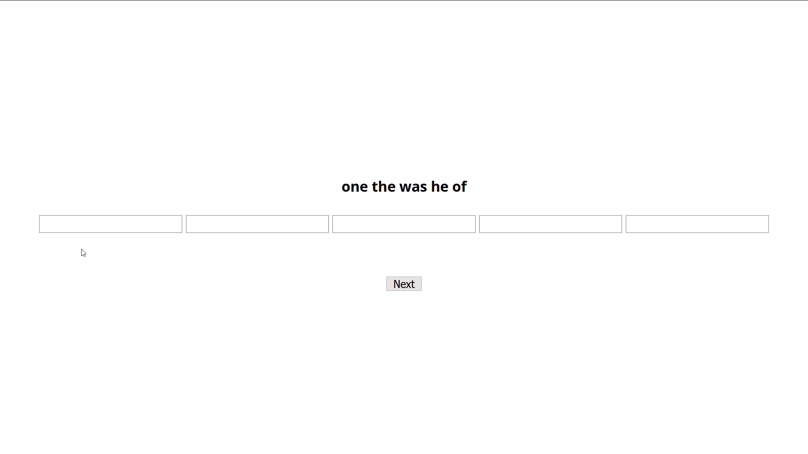
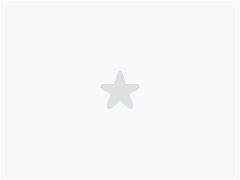

<!DOCTYPE html>
<html>
	<head>
		<title>My experiment</title>
		<script src="jspsych-6.1.0/jspsych.js"></script>
		<script src="jspsych-6.1.0/plugins/jspsych-survey-text.js"></script>
		<script src="jspsych-6.1.0/plugins/jspsych-html-keyboard-response.js"></script>
		<script src="jspsych-6.1.0/plugins/jspsych-cloze.js"></script>
		<script src="jspsych-6.1.0/plugins/jspsych-cloze-blank.js"></script>
		<script src="jspsych-6.1.0/plugins/jspsych-animation.js"></script>
		<script src="https://proliferate.alps.science/static/js/proliferate.js" type="text/javascript"></script>
		<script src="https://ajax.googleapis.com/ajax/libs/jquery/3.5.1/jquery.min.js"></script>
		<link href="jspsych-6.1.0/css/jspsych.css" rel="stylesheet" type="text/css"></link>
		<link href="jspsych-6.1.0/css/animation.css" rel="stylesheet" type="text/css"></link>
	</head>
	<body>
	</body>
	<script>
		
		// The timeline array contains the set of trials we want to run in the experiment
		var timeline = [];	

		var legal = {
			type: 'html-keyboard-response',
			stimulus: '<p>University of California, Irvine Language Processing Group</p>'+
    		'<p id="legal">Met het beantwoorden van de volgende vragen neem je deel aan een studie die wordt uitgevoerd door onderzoekers van de University of California, Irvine Department of Language Science. Mocht u vragen hebben over dit onderzoek, dan kunt u deze vragen stellen via email aan Richard Futrell op rfutrell@uci.edu of aan Ryan Lee op leerk3@uci.edu. Je moet minimaal 18 jaar oud zijn om deel te nemen aan deze studie. Je deelname is geheel vrijwillig. Je hebt het recht om enkele of alle vragen in deze studie weigeren te beantwoorden. Je hebt het recht om op ieder moment tijdens de studie verdere deelname te weigeren zonder nadelige gevolgen. Je anoniemiteit is verzekerd; de onderzoekers die jou hebben gevraagd voor deelname aan het onderzoek ontvangen geen persoonlijke informatie over jou. </p>' +
    		'<p>Druk op de spatiebalk om te beginnen</p>'
		};
		timeline.push(legal)

		// Define welcome message trial
		var welcome = {
			type: 'html-keyboard-response',
			stimulus: 'Welkom bij het experiment.'
		};
		timeline.push(welcome);


		// Define instructions trial
		var instructions = {
		  type: "html-keyboard-response",
		  stimulus: 
		  	  "<p>Je krijgt een reeks van vijf woorden uit een zin in een willekeurige volgorde.</p>"+
		  	  "<p>Het is jouw taak om de woorden te herschikken in de volgorde van de oorspronkelijke zin</p>" +
		  	  "<p>Echter, je krijgt de oorspronkelijke zin niet te zien.</p>"+
		      "<p>Bijvoorbeeld:</p>" +
		      // '</img>'+
		      "<video width='852' height='480' controls><source src='DUTCH_video1.mp4' type='video/mp4'></video>"+
		      "<p>Druk op de spatiebalk om verder te gaan met de instructies. </p>",
	      // post_trial_gap: 2000
		};
		timeline.push(instructions);

		// Define notes trial
		var notes = {
		  type: "html-keyboard-response",
		  stimulus: "<p>Let op twee dingen:</p>" +
		      "<p>1. De vijf woorden kunnen zijn geselecteerd vanaf elk punt in de zin. </p>" +
		      "<video width='852' height='480' controls><source src='DUTCH_video2-1.mp4' type='video/mp4'></video>"+
		      "<p>2. Wanneer je meerdere mogelijkheden ziet, kies je er gewoon één.</p>" +
		      "<p>Je krijgt de opties om de woorden opnieuw te schudden en om je ingevoerde antwoord te wissen.</p>"+
		      "<p>Druk op de spatiebalk om verder te gaan met de instructies.</p>",
	      // post_trial_gap: 1000
		};
		timeline.push(notes);

		// Define notes trial
		var bonus = {
		  type: "html-keyboard-response",
		  stimulus: "<p>Je krijgt een bonus als het je lukt om de oorspronkelijke volgorde te vinden voor alle woordreeksen.</p>" +
		      "<p>Succes! </p>" +
		      "<p>Druk op de spatiebalk om te beginnen.</p>",
	      // post_trial_gap: 1000
		};
		timeline.push(bonus);
		var sentence_dict = {'verslindendste,soort,van,het,haaijengeslacht': 'John Mangles had zich niet vergist; het was wel degelijk deverslindendste soort van het haaijengeslacht, de balansvisch derEngelschen, de jodenvisch der Provencalen.', 'klonen,op,de,plaveien,draaide': ' Ineens stampte de pater met zijn klonen op de plaveien, draaide metgeweld aan zijn koffiemolen en begon luid te zingen.', 'doodgetrapt,als,een,vorsch,of': ' Ik had behoefte aan het verkeeren onder menschenmet wie ik op gelijken voet kon omgaan, en langs de straten en veldenwandelen zonder vrees te worden doodgetrapt als een vorsch of een jonghondje.', 'geëscorteerd,als,een,rajah,op': ' Het land waseenzaam en verlaten, dat kunnen we nu niet meer zeggen, want we wordennu geëscorteerd als een rajah op reis!.', 'kennisnemen,van,het,resultaat,onzer': ' Zooals ik u reeds heb gezegd, zult gij later door onze boekenkunnen kennisnemen van het resultaat onzer expeditie.', 'loto,of,een,ganzenspelleken,en': " Telken Zondag wierdze uitgenoodigd op een koffie bij 't een of 't ander begijntje, speeldeeen loto of een ganzenspelleken en ze spraken over geestelijke zaken,de martelingen der heyligen, de verschijning van Ons-Lief-Vrouwkenen de schoonheid van den Hemel.", 'ontrustheid,hem,de,vaak,aan': ' En als hij de rouwe dus dreef een lange wijle zookwam in zijn ontrustheid hem de vaak aan; zoo dat hij slapen moest.', 'vastgesnoerd,op,het,ezelken,zijn': ' Toen hij het kroesken geborgen had in denknapzak, vastgesnoerd op het ezelken zijn rug, merkte hij het witvan Lijzebetheke heur kap in de palmenhaag.', 'concurrentie,in,de,selectie,in': ' Dit komt doordat in de bastaardsoorten, in de variëteiten (vooral in degelijktijdige variëteiten, die men correlaties van groei noemt) in hetinstinct, in de gevallen van vitale concurrentie, in de selectie, in degeologische opvolging en de geographische verspreiding der bewerktuigdewezens, in de wederkeerige verwantschap, evenals overal elders, degedachte der natuur uitvoerig en slordig, zuinig en kwistig, voorzichtigen onoplettend, onstandvastig en onwankelbaar, druk en onbewegelijk, éénen ontelbaar, grootsch en popperig is uitgedrukt op hetzelfde oogenbliken bij hetzelfde verschijnsel.', 'liet,hem,zoo,werpen,in': ' De Koningdede aan elken voet van Beyaert een molensteen binden, en aan den halstwee, en liet hem zoo werpen in de riviere; nog kwam Beyaert boven enliep na Reinout en brieschte zeer.', 'met,blijdschap,toestemt,dat,vele': ' Over het geheel, terwijl men gaarne en met blijdschap toestemt,dat vele personen hoogst loffelijke verbeteringen hebben gemaakt,wat de voorziening voor het ligchamelijk welzijn der slaven betreft,is het toch nog te vreezen, dat het tafereel der omstandighedenop de plantaadje van Legree maar al te dikwerf getrouw zou wordenbevonden.', 'nabijheid,der,rivieren,zoo,talrijk': ' Had hij de nadering bespeurd van op roof rondzwervende Indianen,of de komst der jaguars, der watertijgers en van andere vreeselijkedieren, die in de nabijheid der rivieren zoo talrijk zijn?.', 'zeggen,hij,verwondert,zich,er': ' Hij kan het niet zeggen, hij verwondert zich er over, dat is alles.', 'waarschijnlijk,een,wetenschappelijken,arbeid,op': ' Aan Emery vroeg men hulpals aan een geleerde, die reeds gewend was aan het zuidelijk klimaat,en omdat men waarschijnlijk een wetenschappelijken arbeid op het ooghad, was zijne medewerking voor zijne ambtgenooten uit het Vereenigdekoninkrijk van hooge waarde.', 'wegens,de,vette,weilanden,voor': ' Tegen het einde van den dag bereikte de karavaan een van diehalten, welke door zwervende herders of boeren bewoond worden,en waar deze wegens de vette weilanden voor eenige maanden hunverblijf opslaan.', 'door,regen,en,slegen,grijs': ' De Arke vaarde door regen en slegen, grijs weeren zonneschijn.', 'maar,alles,wat,ten,mijnen': ' Maar alles wat ten mijnen behoeve kan gedaan    worden, zal mijn staat toch nog zeer droevig laten.', 'loop,der,natuur,zullen,nog': ' Mijne ouders zijn nog in leven [2], hoewel    op jaren gevorderd, en volgens den loop der natuur zullen nog    weinige jaren hun leven op aarde besluiten.', 'dan,twintig,wespen,door,den': ' Ik herinner me, dat op een morgen, toen Glumdalclitch mij in mijn doosvoor een venster gezet had, zooals zij meestal deed als het zonnigweer was, om me frissche lucht te geven (want ik dorst niet wagende doos aan een nagel buiten het venster te laten hangen, zooals wijmet vogelkooitjes doen in Engeland), nadat ik een van mijn ramen hadopgeschoven en aan mijn tafel zat om een stukje koek voor mijn ontbijtte gebruiken, meer dan twintig wespen door den reuk aangelokt, mijnkamer kwamen invliegen, harder brommende dan het geblaas van zooveeldoedelzakken.', 'nu,en,dan,in,de': ' Het groote gezag, dat Willem in de Nederlanden had, heeft hij gebruikt,ten einde de hinderpalen, die hij nu en dan in de leiding der Republiekop zijn weg ontmoette, op zoodanige wijze uit den weg te ruimen, dat hijde regenten zoo goed als afhankelijk van zich maakte.', 'die,in,den,laatsten,tijd': ' Deconsiderans dezer wet zal, gelooven wij, de denkbeelden omtrent deslavernij wel wijzigen van hen, die ze slechts leerden kennen uitdie tafereelen van ongestoorde tevredenheid en Arcadische rust,die in den laatsten tijd er van zijn opgehangen.', 'van,de,plaats,waar,zij': ' Van de plaats waar zij zaten, konden zij de antilopen zien en de bevallige dieren in alle bijzonderhedenwaarnemen.', 'dat,hij,den,volgenden,morgen': ' Smith lag sprakeloos en buiten bewustzijn tot dat hij den volgenden    morgen aan zijne wonden stierf.', 'op,den,rug,van,het': ' De worsteling tusschen den mensch en hemheeft dan plaats op den rug van het reusachtige dikhuidige dier,dat zich driftig maakt en het is zeldzaam, dat zij niet ten voordeelevan het wilde dier beslist wordt.', 'is,dan,die,van,de': ' Zij bestond uit lange zandbanken, die verin zee liepen, en welker nadering gevaarlijker is dan die van de blindeklippen.', 'uit,het,feit,dat,hij': ' Wij leiden zulks af uit het feit dat hij,in zijnen catechismus, den slaaf de heiligheid en voortdurendheidder betrekking poogt in te prenten.', 'men,in,het,geheel,niet': ' Doch wie schetst hunne verbazingtoen dienzelfden dag, 30 Juni, tegen twee uren des namiddags kolonelEverest en zijne makkers, die men in het geheel niet terug verwachthad, in de legerplaats verschenen.', 'in,dezen,tijd,van,het': ' Maar in dezen tijd van het jaar was hetweder zeer droog en de temperatuur zeer hoog.', 'zich,in,de,schaduw,van': ' In elke hut zijn de mannen aan het scheren en kleeden; de vrouwen, in hare bonte katoentjes gekleed, maken hare gekroesde haren op--waarop    zij niet weinig grootsch zijn--en zien den staat van hare kinderen    na; de oude lieden, net gekleed, zitten bij de deuren stil te praten of te rooken; en diegenen van de jongere bevolking, die niet juist de pijniging der waschtobbe ondergaan, vermaken zich in de schaduw van het geboomte of om een kleinen waterplas, met evenveel lust, alsof slavernij en vrijheid woorden van gelijke beteekenis waren.'}
		var likely_1 = [['nu', 'en', 'dan', 'in', 'de'],['die', 'in', 'den', 'laatsten', 'tijd'],['van', 'de', 'plaats', 'waar', 'zij'],['dat', 'hij', 'den', 'volgenden', 'morgen'],['op', 'den', 'rug', 'van', 'het']]
		var likely_2 = [['is', 'dan', 'die', 'van', 'de'],['uit', 'het', 'feit', 'dat', 'hij'],['men', 'in', 'het', 'geheel', 'niet'],['in', 'dezen', 'tijd', 'van', 'het'],['zich', 'in', 'de', 'schaduw', 'van']]
		var likely_3 = [['liet', 'hem', 'zoo', 'werpen', 'in'],['met', 'blijdschap', 'toestemt', 'dat', 'vele'],['nabijheid', 'der', 'rivieren', 'zoo', 'talrijk'],['zeggen', 'hij', 'verwondert', 'zich', 'er'],['waarschijnlijk', 'een', 'wetenschappelijken', 'arbeid', 'op']]		
		var likely_4 = [['wegens', 'de', 'vette', 'weilanden', 'voor'],['door', 'regen', 'en', 'slegen', 'grijs'],['maar', 'alles', 'wat', 'ten', 'mijnen'],['loop', 'der', 'natuur', 'zullen', 'nog'],['dan', 'twintig', 'wespen', 'door', 'den']]
		var likely_5 = [['verslindendste', 'soort', 'van', 'het', 'haaijengeslacht'],['klonen', 'op', 'de', 'plaveien', 'draaide'],['doodgetrapt', 'als', 'een', 'vorsch', 'of'],['geëscorteerd', 'als', 'een', 'rajah', 'op'],['klonen', 'op', 'de', 'plaveien', 'draaide']]
		var likely_6 = [['kennisnemen', 'van', 'het', 'resultaat', 'onzer'],['loto', 'of', 'een', 'ganzenspelleken', 'en'],['ontrustheid', 'hem', 'de', 'vaak', 'aan'],['vastgesnoerd', 'op', 'het', 'ezelken', 'zijn'],['concurrentie', 'in', 'de', 'selectie', 'in']]
		// // most_likely_pre.splice(0,10)
		// mid_likely_pre.splice(0,10)
		// least_likely_pre.splice(0,10)

		function shuffle(array) {
		  var currentIndex = array.length, temporaryValue, randomIndex;

		  // While there remain elements to shuffle...
		  while (0 !== currentIndex) {

		    // Pick a remaining element...
		    randomIndex = Math.floor(Math.random() * currentIndex);
		    currentIndex -= 1;

		    // And swap it with the current element.
		    temporaryValue = array[currentIndex];
		    array[currentIndex] = array[randomIndex];
		    array[randomIndex] = temporaryValue;
		  }

		  return array;
		}

		function get_trial_text(ordered, shuffled) {
			var random_words_string = shuffled.join(' </a><a>');
			var random_words_string = '<a>' + random_words_string + ' </a>'
			var output_1 = '<p id=\'word-choices\'>'+random_words_string+"</p>"
			var output_2 = "<p>"
			ordered.forEach(function(each){
				output_2 += "%" + each + "%"
			})
			output_2 += '</p><button class=\'randomize\'>Woordvolgorde herschudden </button><button class=\'clear\'>Wissen</button>'
			return output_1+output_2
		}		

		function fill_array(fill_from) {
			final_array = []
			fill_from.forEach(function(each){
				ordered = each.slice()
				shuffled = shuffle(each)
				final_array.push({'text': get_trial_text(ordered, shuffled)})
			})
			return final_array
		}

		likely_1 = fill_array(likely_1)
		likely_2 = fill_array(likely_2)
		likely_3 = fill_array(likely_3)
		likely_4 = fill_array(likely_4)
		likely_5 = fill_array(likely_5)
		likely_6 = fill_array(likely_6)
		shuffle(likely_1)
		shuffle(likely_2)
		shuffle(likely_3)
		shuffle(likely_4)
		shuffle(likely_5)
		shuffle(likely_6)

		// likely_1 = likely_1.slice(0,5)
		// likely_2 = likely_2.slice(0,5)
		// likely_3 = likely_3.slice(0,5)
		// likely_4 = likely_4.slice(0,5)
		// likely_5 = likely_5.slice(0,5)
		// likely_6 = likely_6.slice(0,5)

		var test_stimuli = []
		var first_set = likely_1.slice(0,3)
		// var test_stimuli = likely_1.slice(0,3)
		var pre_remaining_set = likely_1.slice(3).concat(likely_2).concat(likely_3).concat(likely_4).concat(likely_5).concat(likely_6)
		// var pre_remaining_set = most_likely.concat(mid_likely).concat(least_likely)
		shuffle(pre_remaining_set)
		var remaining_set = pre_remaining_set
		// test_stimuli = test_stimuli.concat(first_set)
		test_stimuli = test_stimuli.concat(remaining_set)

		var fixation = {
		  type: 'html-keyboard-response',
		  stimulus: function(){
			var images = document.getElementsByTagName('img');
			var l = images.length;
			for (var i = 0; i < l; i++) {
			    images[0].parentNode.removeChild(images[0]);
			}
		    var last_trial_correct = jsPsych.data.getLastTrialData();
		    var key = jsPsych.data.getLastTrialData().values()[0].solution.toString()
		    var response = jsPsych.data.getLastTrialData().values()[0].response.toString()
		  	if(last_trial_correct.values()[0].correct){
		  		return '<h2>Juist!</h2><h4>Je antwoord was: </h4><p>'+response+'</p><h4>Dit is de oorspronkelijke zin: </h4><p>'+sentence_dict[key]+'</p><p style="font-size:11px;">(Deze zin is uit een tekst van Project Gutenberg gehaald)</p><p style="font-size:11px;">Druk op de spatiebalk.</p>'
		  	} else{
		  		return '<h2>Onjuist.</h2><h4>Je antwoord was: </h4><p>'+response+'</p><h4>Dit is het juiste antwoord en de oorspronkelijke zin:</h4><p>'+key+'</p><p>'+sentence_dict[key]+'</p><p style="font-size:11px;">(Deze zin is uit een tekst van Project Gutenberg gehaald)</p><p style="font-size:11px;">Druk op de spatiebalk.</p>'
		  		// return '<p>Wrong.</p><p>Here was the original sentence:</p><p></p><p>Press any key to continue.</p>'

		  	}
		  },
		  choices: [' '],
	      trial_duration: function(){
		    var last_trial_correct = jsPsych.data.getLastTrialData();
		  	if(last_trial_correct.values()[0].correct){
		  		return 60000
		  	} else{
		  		return 60000
		  	}
		  },
	      data: {test_part: 'fixation'}
		};
		
		var trial = {
		    type: 'cloze',
		    text: jsPsych.timelineVariable('text'),
		    check_answers: true,
		    button_text: 'Volgende',
		    on_load: function(trial){
			    var isTesting = document.getElementsByClassName('cloze');
			    var inputs = isTesting[0].childNodes[1].childNodes
			    var words = isTesting[0].childNodes[0].childNodes
			    var words_copy = words
			    var words_array = []
			    words.forEach(word => words_array.push(word.text.trim()))
			    isTesting[0].childNodes[1].childNodes.forEach(inputBox => inputBox.addEventListener('keyup',isMatch))
			    isTesting[0].childNodes[2].addEventListener('click', randomize)
			    isTesting[0].childNodes[3].addEventListener('click', clear)

			    function isMatch(e) {
			    	text_input = e.target.value
			    	var line_through = 0
					//console.log("text_input: "+text_input)
			    	if (words_array.includes(text_input)) {
			    		try{
			    			//console.log("words_array: "+words_array.toString());
			    			;
			    			var occurence = 0;
			    			words_array.forEach(word => (text_input == word ? occurence++ : ''));
			    			(occurence > 1 ? (words[words_array.indexOf(text_input)].style.textDecoration=="line-through" ? words[words_array.indexOf(text_input, words_array.indexOf(text_input)+1)].style.textDecoration="line-through" : words[words_array.indexOf(text_input)].style.textDecoration="line-through") : words[words_array.indexOf(text_input)].style.textDecoration="line-through");
			    			
			    		} catch(e){
			    			//console.log(e)
			    		}
			    	} else {
			    		input_match = []
			    		input_nonmatch = words_array.slice()
			    		inputs.forEach(function(input) {
			    			(words_array.includes(input.value.trim()) ? input_match.push(input.value.trim()) : '');
			    			input_match.forEach(match => input_nonmatch.splice(input_nonmatch.indexOf(match)))
			    			input_match.forEach(match => words[words_array.indexOf(match)].style.textDecoration="line-through")
			    			input_nonmatch.forEach(nonmatch => words[words_array.indexOf(nonmatch)].style.textDecoration="none")
			    		});
			    	}
			    }

			    function randomize(e) {
					for (i = isTesting[0].childNodes[0].childNodes.length; i >= 0; i--) {
					    isTesting[0].childNodes[0].appendChild(isTesting[0].childNodes[0].children[Math.random() * i | 0]);
					}
				    words = isTesting[0].childNodes[0].childNodes
				    words_copy = words
				    words_array = []
				    words.forEach(word => words_array.push(word.text.substring(0,word.text.length-1)))
			    }

			    function clear(e) {
			    	isTesting[0].childNodes[1].childNodes.forEach(inputBox => inputBox.value = "")
				    input_nonmatch = words_array.slice()
				    input_nonmatch.forEach(nonmatch => words[words_array.indexOf(nonmatch)].style.textDecoration="none")
			    }
		    }

		};
		var test_procedure = {
		  timeline: [ trial, fixation],
		  timeline_variables: test_stimuli,
		  randomize_order: false,
		  repetitions: 1
		};
		timeline.push(test_procedure);

		var debrief_block = {
		  type: "html-keyboard-response",
		  stimulus: function() {

		    var trials = jsPsych.data.get().filter({test_part: 'test'});
		    var correct_trials = trials.filter({correct: true});
		    var accuracy = Math.round(correct_trials.count() / trials.count() * 100);
		    var rt = Math.round(correct_trials.select('time_elapsed').mean())/1000;

		    return "<p>Je hebt "+accuracy+"% van de woordreeksen juist herschikt.</p>"+
		    "<p>Desondanks hebben we besloten je alsnog de bonus toe te kennen. Gefeliciteerd!</p>"+
		    "</img>"+
		    "<p>Druk op de spatiebalk.</p>";

		  }
		};
		timeline.push(debrief_block);

		var survey = {
 			type: 'cloze-blank',
		    text: '<p>Let er op dat je op ‘versturen’ klikt om het experiment te beëindigen. </p>'+
		  '<p class="info">Het beantwoorden van deze vragen is optioneel maar zal ons helpen je antwoorden beter te begrijpen. </p>'+  
	      '<p>Heb je de instructies gelezen en denk je dat je het experiment correct hebt uitgevoerd?'+
	      	  '<select id="understanding">'+
	          '<label><option value=""/></label>'+
	          '<label><option value="No"/>Nee</label>'+
	          '<label><option value="Yes"/>Ja</label>'+
	          '<label><option value="Confused"/>ik was in de war</label>'+
	          '</select>'+
	      '</p>'+
	      '<p>Geslacht: '+
	        '<select id="gender">'+
	          '<label><option value=""/></label>'+
	          '<label><option value="Male">Man</label>'+
	          '<label><option value="Female"/>Vrouw</label>'+
	          '<label><option value="Other"/>Anders</label>'+
	        '</select>'+
	      '</p>'+
	      '<p>Leeftijd: <input type="text" id="age"/></p>'+
	      '<p>Hoogst behaalde opleidingsniveau: '+
	        '<select id="education">'+
	          '<label><option value="-1"/></label>'+
	          '<label><option value="0"/>Middelbare school onvoltooid</label>'+
	          '<label><option value="1"/>Middelbare school</label>'+
	          '<label><option value="2"/>MBO</label>'+
	          '<label><option value="3"/>HBO/Bachelor</label>'+
	          '<label><option value="4"/>Master, PhD</label>'+
	        '</select>'+
	      '</p>'+
	      '<p>Moedertaal: <input type="text" id="language"/></p>'+
	      '<label> (de taal/talen die je als kind thuis sprak.)</label>'+
	     ' <p>Vond je het een leuk experiment?</p>'+
	      '<select id="enjoyment">'+
	       ' <label><option value="-1"></option></label>'+
	        '<label><option value="0">Minder leuk dan het gemiddelde experiment</option></label>'+
	        '<label><option value="1" >Een gemiddeld experiment</option></label>'+
	        '<label><option value="2">Leuker dan het gemiddelde experiment</option></label>'+
	      '</select>'+
	      '<p>We zijn erg geinteresseerd in wat je van het experiment vond. Schrijf hier eventuele verdere opmerkingen:</p>'+
	      '<textarea id="comments" rows="3" cols="50"></textarea>'+
	      '<br/>'
	      ,
		    check_answers: false,
		    button_text: 'Submit',
		};
		timeline.push(survey);


		// let ppn = jsPsych.data.urlVariables()['ppn']
		let ppn = jsPsych.data.urlVariables()
		// call the saveData function after the experiment is over
		jsPsych.init({
	       timeline: timeline,
		   // code to define the experiment structure would go here...
            on_finish: function (data) {  
            	console.log(data.values())  
            	proliferate.submit({"trials": data.values(), "participant_id": ppn['participant_id'], "experiment_id": ppn['experiment_id']});
                document.body.innerHTML = '<p>Een moment alstublieft, u wordt zo snel mogelijk doorgestuurd naar Prolific. </p>'
                // window.location.assign("")
                setTimeout(function () { location.href = "https://app.prolific.co/submissions/complete?cc=4B1CD1C5" }, 3000)
            }
		});

	</script>
</html>
